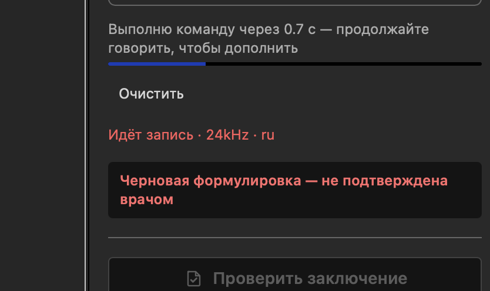

Command Mode: Your Voice Can Now Edit, Not Just Dictate¶
2026-08-29
Early preview
Command mode is open as a preview. It works, but not always: some commands behave differently from what is described below, and some come back with an error. We keep it open precisely so that you run into that and tell us — real dictated commands show what ours never do. The phrasings and the behaviour will change.
Report a problem with the Report an issue button in the task pane, see the end of the article.
The Word add-in has two dictation modes. In Dictate, what you say becomes report text. In Command, you say not the text but what to do with the document — move a paragraph, cut a sentence, insert an organ's normal finding — and the document changes on its own.
Turning it on¶
Next to the record button there is a switch: Dictate and Command.
{kind=link}
- Switch to Command before you start recording — the switch is locked while recording, so it cannot cut off what you have already said.
- Press record and speak the command in your normal voice.
- Stop talking. After a couple of seconds the command runs; a countdown on screen says "Running the command in N s — keep talking to add to it."
{kind=link}
That last point matters more than it looks. The pause is not a patience timer but a way to extend what you said: while you speak, the countdown resets. Change your mind halfway through — finish the sentence, and the system hears the whole thing.
If the command is about a specific piece of text, select it first. Almost every rule below rests on the selection.
What you can say¶
Insert an organ's normal finding¶
"insert spleen, normal" · "add adrenals, normal" · "write in bronchi, normal"
The most frequent command, and the fastest one: a ready-made wording is inserted, taken from the corpus of reports — the one that dozens of descriptions agree on almost word for word. Nothing is composed on the spot, and the answer is immediate.
Say it however it comes out. Russian case endings and the ё/е spelling difference are all understood the same way. Politeness — "insert the spleen normal here, please" — does not get in the way.
Transform the selection¶
"format this" · "tidy it up" · "shorten" · "expand" · "rephrase"
A broadly worded request is fine. If your words make it clear what to do, the system does it rather than asking. "Format this" over a selected paragraph means "bring it to the style accepted for this area, losing nothing."
Reorder¶
"swap the first and last paragraphs" · "put these in order"
The order changes; the content does not.
Delete a fragment¶
"delete the last sentence" · "drop the bit about the kidneys"
Fix a fragment¶
"correct the previous sentence"
Change the formatting¶
"remove the italics in the first paragraph" · "make this bold"
This is the only case where the system may change markup — when you explicitly ask. Everywhere else it preserves it.
CT and MRI: which base of wordings is used¶
The ready-made wordings live in two separate bases, one for CT and one for MRI. A normal finding reads differently in each, and substituting one for the other is not acceptable. Which base to use is decided automatically, in this order:
- The modality chosen in settings. A radiologist usually works one modality, and choosing it once is the most reliable option: every command is then unambiguous, including on an empty, freshly opened document. A modality selector is coming to the app's settings; until then, write to us and we will set it for your connection.
- The modality named in the report text. With nothing set, the system reads the document you are working in.
- With nothing to go on, the fast substitution does not run and the command takes the long road: slower, but not a guess. That happens on an empty document, or when the text mentions both modalities — a comparison with a prior study of the other kind, say. The system will not choose in that situation.
Five rules worth knowing¶
These are not about the interface but about how the system reasons. Knowing them, you will phrase commands more precisely — and understand why you sometimes get a question instead of an action.
1. "The first paragraph" means the first of the selected ones. Not the first in the document. You made a selection precisely in order to talk about it. With no selection and a positional reference, the system asks rather than guessing across the whole document.
2. The smallest necessary thing is touched. Ask to delete one sentence inside a selected paragraph and the sentence goes, rather than the paragraph being rewritten. Rewriting a whole to fix a part means needlessly running text you did not ask to change through the system. The smaller the blast radius, the less can go wrong.
3. Wording changes, content does not. In any transformation of a selection, every finding, every organ and every measurement must survive. If the request could only be carried out by adding or dropping a fact, the system asks. This is its central prohibition.
4. Markup comes back as it went in. An organ label that was bold returns bold. Flat text in answer to marked-up text is the same kind of loss as a dropped measurement, only less immediately visible.
5. One command, one undo. Ctrl+Z returns the document to its state before the command, in full. And it does not swallow what you typed beforehand.
What command mode cannot do yet¶
Better to read this now than to conclude something is broken later. The list of known limits is not the list of all of them: the mode is a preview, and some of its defects we find together with you.
- For seven organs the normal-finding insertion is switched off on purpose. The data labelling for them in the corpus is wrong, and instead of a plausible-looking wrong paragraph the system explains what the problem is. "Insert liver, normal" answers with a refusal and an explanation rather than pasting someone else's text. This gets fixed on the corpus side, not in the app.
- A repeated fragment is refused. If what you ask to delete or fix occurs twice in the document ("not enlarged", "unremarkable"), the system will not guess which one. Select the right spot and repeat.
- A positional reference with no selection gets a question. See rule 1.
- Two requests in one utterance ("add spleen normal and format the rest") are both carried out, but more slowly: the fast substitution is not built for that, and the whole utterance takes the long road.
- The web editor and the desktop app are coming. In the desktop app command mode will be insert-only: by design it does not read the document you are working in, and that constraint stays.
What it rests on¶
Three things explain almost all of command mode's behaviour.
The wordings live in a corpus of reports, not inside the program. That is why they are shared
across all our applications and can be extended without updating the add-in: as the corpus grows,
"insert
Inserting a normal finding is substitution, not composition. The ready text is taken from the corpus as it stands, which is why it arrives instantly. Everything else — transformations, deletions, reordering — requires understanding the utterance and takes a few seconds.
A refusal beats a silent mistake. A command it cannot resolve is not guessed at: the system asks, and says what exactly is unclear. You see a refusal immediately; a quietly mangled paragraph you find a week later.
About the "provisional wording" badge¶
When inserted text comes from the corpus, a badge appears in the task pane: provisional wording, not confirmed by a radiologist. The corpus was selected automatically, and no anatomical area has been signed off by a doctor yet.

{kind=link}
And the rule that changes neither with the mode nor with the version: responsibility for the content of the report stays with the doctor. The system prepares the text; the doctor signs it.
If something goes wrong¶
The task pane has a Report an issue button — use it rather than your memory: pressed right after a command that misfired, it attaches the recognised fragment and the last minute of audio, so we can see what you actually said.
{kind=link}
One thing it needs from you. What gets attached is what you said, not what the system did with it — the dialog header will say the report is about dictation even when you are reporting a command that misfired. So add a line in the comment field about what you expected and what happened: "expected the last sentence to be deleted — the whole paragraph was rewritten." Two lines are enough, and they are what turns a report into a fixable defect.
A command that was refused where it should have worked is the most useful thing you can send us. If email is easier: saywordai@gmail.com.